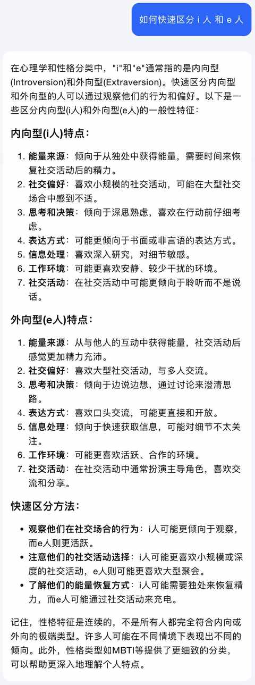
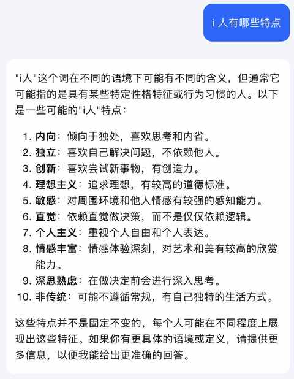
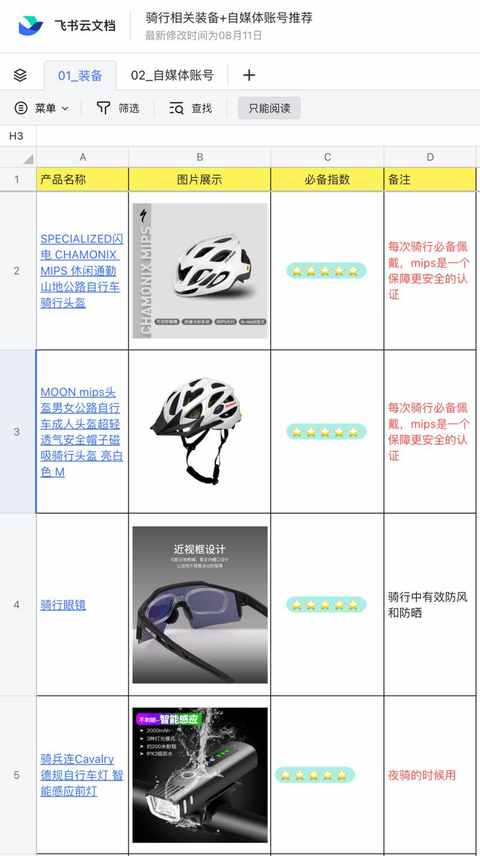
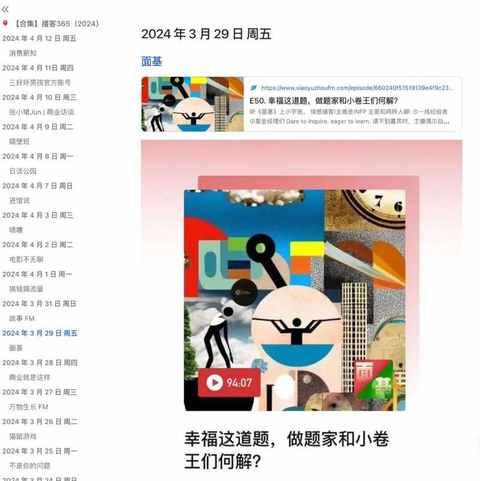
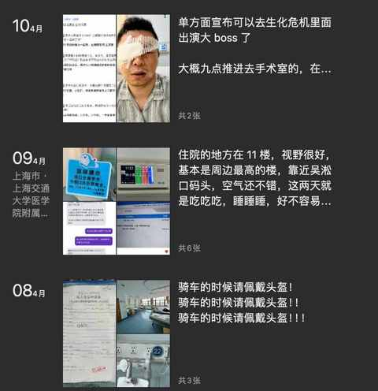
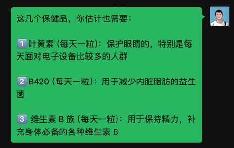

一名资深 i 人的自我修养
不知从什么时候开始，突然从小就听到的内向与外向的表述就变成了 i 人和 e 人，网络上同步也有了许多热门的探讨。
关于 如何区分 i 人与 e 人，Kimi Ai给到的回复还是不错的，比用搜索引擎的效果高很多。

作为资深 i 人，在听说到 i 人和 e 人的定义之后，就做了斩钉截铁的判断：本人是 i 人无疑，不过当时并没有具体去查更多的内容，例如 i 人有哪些具体的特点等等。

单纯从这些特点的表述去臆测 i 人的日常和成长经历是十分不具体，甚至会出现比较大的偏差，毕竟有一些特质就是人类共有的。
作为一名资深 i 人，接下来会从个人习惯的角度去阐述 i 人的特点。
- 较好的时间感知及规划能力
很难错过计划好的航班、高铁等公共交通， 往往在出发前就已经查询好了路线和所需时间，根据这个来计划出发时间，根据不同的交通工具一般会提前 30-60 分钟抵达等待检票，不会太早更不会迟到，不过本 i 人也是有 1 次跑错车站的经历，那次时间是 OK 的，但车站错了。
例如，要赶早上 8 点的高铁，从家打车到高铁站 40 分钟左右
一般会在睡前做好计划，设置好多个闹钟，可能是 6 点、6 点 10 分、6 点 25 分各一个，最后一个闹钟是用来提醒要正式出门，当天大概是这样的情况：
起床：6 点 05 分左右
出门：6 点 30左右
上车：6 点 40左右
到车站：7 点 10 分 左右
……
2. 做饱和式准备
出去跑步、 饭后散步、骑行等，会带上小包纸巾
车上及日常背的包都备有口罩和纸巾
如出门一整天，一定会带充电宝和水
……
3. 无需培养的利他思维
整理文档的时候会有一个逻辑：如果给到其他人看，如何让他们能更高效的获取信息而且要尽量规避被错误解读


遇到觉得有意义的内容和信息会不遗余力的分享出去

微信里面发长句子肯定会断行，可能的话，会列1、2、3

4. 主动社交困难户
很少很少去人特别多的活动，尤其人要和一大堆陌生人互相介绍的那种类型，实在是太费脚趾头。
10 多年前参加过知乎上海群的一次线下活动，当时认识的人都没啥印象了，但吃饭的地方不错，店也一直没有倒闭，在这期间推荐给了不少朋友去尝尝，自己也去过多次。
5. 说话能力需提升
刚开始和同事语音的时候都是要先把要点都写出来，然后一点点去叙述，后面熟悉了之后也还是要准备，只是所需时间会短一点
依然没有养成要和老婆及家人主动表露心声的习惯，导致在某段时间一直出现亲密关系的困境
i 人和 e 人都是比较笼统的说法，网络上也有不少分析自己是多少比例的 i 人什么比例的 e 人，什么时候比较 i 人，什么时候比较 e 人。
作为资深 i 人也逐步想通了一些：大部分时候追随本心就好，但如果阶段性的进步一点点，探索一些些，生活会更美好！